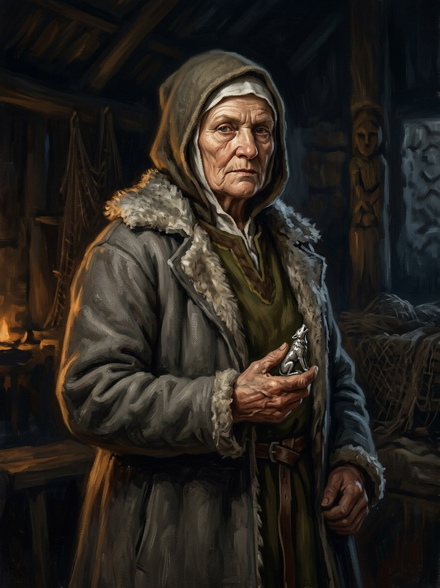

Rimgailė (Palanga fisherwoman)¶
Ryšiai
Holds: Sidabrinis vilkas (Kęstutis’s amulet) (1450–…) — Given by the dying keeper at Palanga (Book V ch. 29-30); an heirloom in 1553.
Spouse: Dargis (Palanga fisherman)
Took part in: Žiežirba dies; cremated on the beach
Rimgailė (Palanga fisherwoman)

Rimgailė (Palanga fisherwoman) · character¶
Tipas |
character |
Years |
c. 1390–? |
Status |
The saga’s invention |
Pastaba |
About sixty in 1450; receives the silver wolf from the Flame-Keeper (Book V ch. 29-30). Not Kęstutis’s daughter Rimgailė. Husband Dargis; granddaughter Gedvilė. |
Summary¶
Rimgailė, a Palanga fisherwoman (about sixty in 1450), receives the silver wolf from the dying keeper „bread for bread“ and puts it under her threshold; her granddaughter Gedvilė’s line sweeps the statue’s stone (Book V ch. 25, 29, 30).
Appearance & tells¶
A grey-haired fisherman’s wife, wrapped in a shawl, with a small knife in her hand and a loaf under her arm; her face has barely changed in twenty years, only tightened a little round the eyes, attentive and waiting „as if she already knew that now it would not be as before“ (Book V ch. 25). She wipes her hands on her apron after kneading, kneels on the sand with a palm on the amber where the kneeling woman’s breast would be, and says little. She lays the Kūčios table for twelve dishes, with hay under the cloth, and always one more place than there are guests: an empty plate, a spoon and a small knife with a bent handle (ch. 29). She is about sixty in 1450 (b. c. 1390). Her kitchen knife is smith’s iron, the kind the wolves burn with; she does not know it.
Want · Need · Lie · Truth¶
Want (external) |
To keep her family and her village fed and safe, and to keep the old courtesies to the dead (the extra place at Kūčios). |
Need (internal) |
To tell someone what her mother taught her: that Vytautas was the kneeling woman’s son and that it cost her. |
Lie they believe |
A fisherman’s wife’s knowledge is only a mother’s saying: ‚my mother knew‘, but it can’t change anything. |
Truth they learn (or refuse) |
Her bread-for-bread keeping of a stranger’s wolf, and the stone that Gedvilė sweeps every morning ‚and no one will know why‘, are how the knowledge survives without being understood. |
Arc by book¶
Book V, ch. 25 (1445). At Palanga, when the fishermen find the amber kneeling woman no longer glowing and the news of Varna and of Vasily II’s blinding arrives, she speaks to her husband Dargis about the woman at the shore: „My mother said Vytautas was her son, and that he never found out how much it cost her.“
Book V, ch. 29 (Dec 1449 - Mar 1450). When the dying keeper (Žiežirba) comes to Palanga, she finds him at the fire with the white line on his throat, takes him in and watches him age in a day and a night. At Kūčios she lays places for the wolves, for Vytautas („their prince“, to whom no one set a place), and, at his request, for his unnamed mother, the one who called him Žiežirba; she accepts the silver wolf „bread for bread“ („I will not take it“ - „You will; that is how wolves do it“) and lays it under her threshold. He dies in early March, as the ice breaks, with his warm hand in hers.
Book V, ch. 30 (1553). The wolf worn under a shirt by her great-grandson and her granddaughter Gedvilė’s sweeping of the stone are her legacy.
Power & magic¶
Tier 0, no gift. She keeps the old courtesies without knowing their source and carries the silver wolf under her threshold, which makes her the unwitting last holder of the Pact’s token, until Gedvilė’s line carries it on (Book V ch. 29-30). The one magical sign near her is that Gedvilė’s stone is swept every morning and the sweeper never knows why.
Record vs saga¶
[Historical record]: No such person in the record. (Not Kęstutis’s daughter Rimgailė, who married Henryk of Masovia.)
[The saga’s invention]: All of her.
Tarimas¶
rim-GAI-lė · IPA /rʲɪmˈɡɐɪlʲeː/ · English sound-alike „rim-GUY-lay“. Stress on the second syllable. Pronounced as for Kęstutis’s daughter Rimgailė (Masovia), a different person.
Appearances¶
Book V: ch. 25 (1445), 29 (Dec 1449 - Mar 1450), 30 (the epilogue, 1553).
She is not in Books I-IV or VI. Do not confuse with Kęstutis’s daughter Rimgailė, who married Henryk of Masovia (the record), or with the Lyck hostage Rymgailė (Book II ch. 6).
Chronologija¶
Year |
Event |
Book |
|---|---|---|
1450-03 |
V · Vilko Palikimas |
Sąsajos¶
graph LR
dargis["Dargis (Palanga fisherman)"]
ev_keeper_dies["Žiežirba dies; cremated on the beach"]
rimgaile_palanga["Rimgailė (Palanga fisherwoman)"]
silver_wolf["Sidabrinis vilkas (Kęstutis's amulet)"]
rimgaile_palanga -->|Holds| silver_wolf
rimgaile_palanga -->|Took part in| ev_keeper_dies
rimgaile_palanga -->|Spouse| dargis
style rimgaile_palanga stroke-width:3px